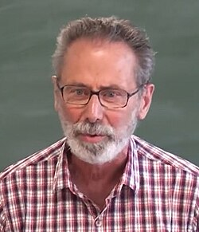

Yves Meyer | |
|---|---|
 Yves Meyer giving a lecture in 2016 | |
| Born | 19 July 1939 Paris, France |
| Education | École Normale Supérieure (BS) University of Strasbourg (MS, PhD) |
| Known for | Multiresolution analysis Harmonious set Meyer set Meyer wavelet |
| Awards | Princess of Asturias Awards (2020) Onsager Medal (2018) Abel Prize (2017) Gauss Prize (2010) Prix de l'État (1984) ICM Speaker (1970, 1983, 1990) Salem Prize (1970) Peccot Lecture (1968/1969) |
| Scientific career | |
| Fields | Mathematics |
| Thesis | Idéaux Fermés de L1 dans Lesquels une Suite Approche l'Identité (1966) |
| Jean-Pierre Kahane | |
Doctoral students | |
Yves F. Meyer (French: [mɛjɛʁ]; born 19 July 1939) is a French mathematician. He is among the progenitors of wavelet theory, having proposed the Meyer wavelet. Meyer was awarded the Abel Prize in 2017.
Born in Paris into a Jewish[1] family, Yves Meyer studied at the Lycée Carnot in Tunis;[2] he won the French General Student Competition (Concours Général) in Mathematics, and was placed first in the entrance examination for the École Normale Supérieure in 1957.[3] He obtained his Ph.D. in 1966, under the supervision of Jean-Pierre Kahane.[4][5] The Mexican historian Jean Meyer is his cousin.
Yves Meyer taught at the Prytanée national militaire during his military service (1960–1963), then was a teaching assistant at the Université de Strasbourg (1963–1966), a professor at Université Paris-Sud (1966–1980), a professor at École Polytechnique (1980–1986), a professor at Université Paris-Dauphine (1985–1995), a senior researcher at the Centre national de la recherche scientifique (CNRS) (1995–1999), an invited professor at the Conservatoire National des Arts et Métiers (2000), a professor at École Normale Supérieure de Cachan (1999–2003), and has been a professor emeritus at Ecole Normale Supérieure de Cachan since 2004.
He was awarded the 2010 Gauss Prize for fundamental contributions to number theory, operator theory and harmonic analysis, and his pivotal role in the development of wavelets and multiresolution analysis.[4] He also received the 2017 Abel Prize "for his pivotal role in the development of the mathematical theory of wavelets."[6][7]
{kind=link}